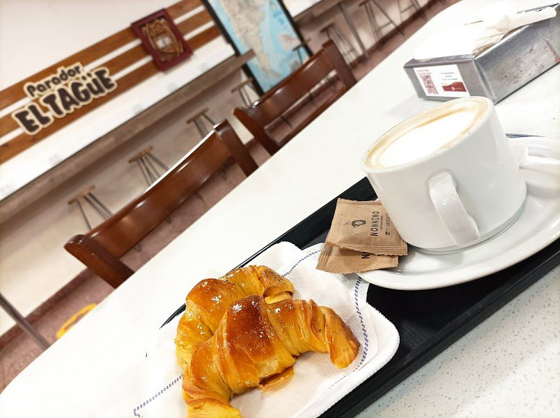

Cafetería & Panadería
Café de especialidad, facturas recién horneadas y tostados.
Punto estratégico en Ruta 14. Gastronomía, cafetería y regionales.
Seleccione una fecha para ver las salidas programadas.
Desde un desayuno completo hasta una cena casera. Todo el día, para vos.
Café de especialidad, facturas recién horneadas y tostados.

Bife de chorizo, milanesas a caballo y cortes al plato.
Pastas, guisos y menú del día con sabor a hogar.
Nos encontramos en un punto estratégico de fácil acceso. Contamos con dársena de ingreso segura tanto para vehículos particulares como ómnibus de larga distancia.